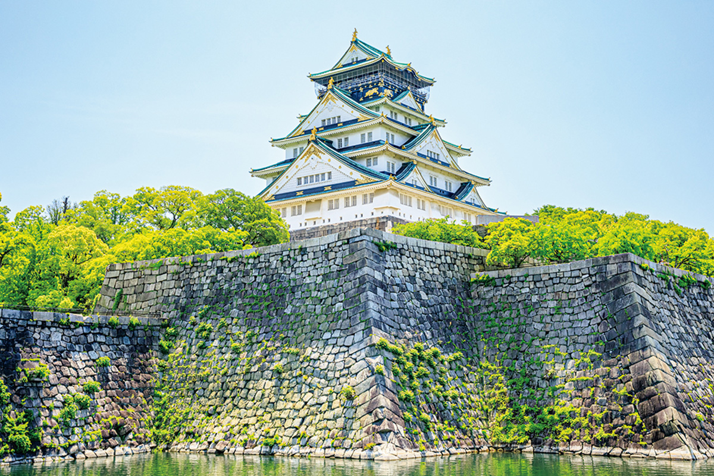
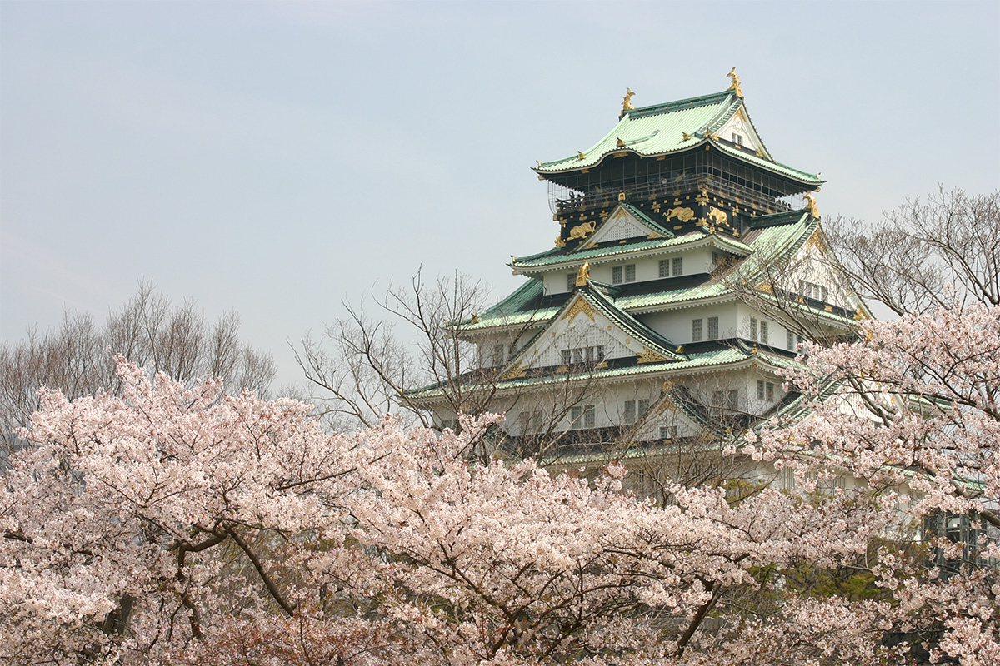
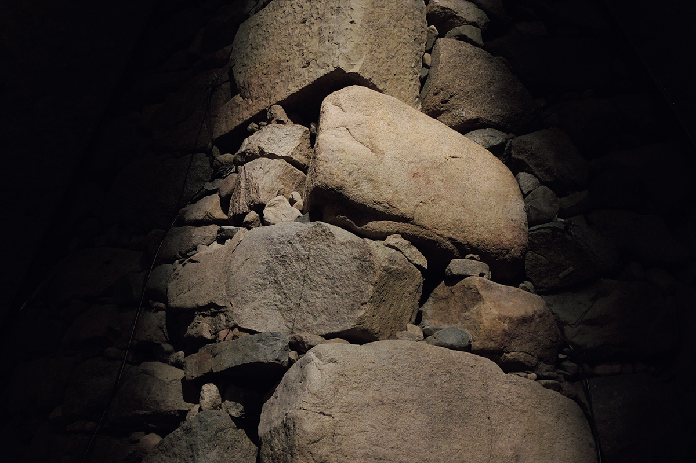

Префектура Осака · Осака · история
Замок Осака: как Хидэёси Тоётоми строил столицу будущего правителя Японии

Замок Осака задумывался как витрина власти: отсюда Хидэёси Тоётоми собирался править всей страной. Нынешняя крепость построена уже после гибели его рода, но масштаб стен до сих пор показывает, с каким размахом всё начиналось.
Путь к власти
Почему именно Осака
Хидэёси Тоётоми (1537–1598) прошёл путь от простолюдина до правителя всей Японии и стал одним из трёх объединителей страны. Долгое время он служил полководцем у Нобунаги Оды (1534–1582), а рядом с ним всю жизнь был младший брат Хидэнага Тоётоми (1540–1591). Хидэёси не раз становился героем исторических сериалов, а в 2026 году главную роль в большой исторической драме NHK отдали Хидэнаге.
После гибели Нобунаги в 1582 году его наследники и военачальники собрались в замке Киёсу, чтобы поделить власть и земли. Север провинции Оми, где стоял прежний замок Хидэёси, достался полководцу Кацуиэ Сибате (погиб в 1583 году). Сам Хидэёси получил земли вокруг Киото и Осаки и на время устроил ставку в горной крепости у селения Ямадзаки, к югу от Киото.
Соперничество Хидэёси и Кацуиэ быстро переросло в открытую войну. В 1583 году они сошлись в битве при Сидзугатакэ, которая расколола дом Ода надвое. Хидэёси победил, фактически унаследовал власть и порядки Нобунаги и начал свой путь к единоличному правлению.
Для такой роли нужна была новая столица. Осака (в те времена название города записывали другим иероглифом) с давних времён процветала как портовый город, и Хидэёси решил, что отдавать приказы всей стране лучше всего отсюда.
Стройка
Пятнадцать лет и тысяча татами

На этом месте прежде стоял Исияма Хонгандзи, укреплённый храм буддийской школы, которая много лет воевала с Нобунагой. В 1583 году на его руинах Хидэёси начал строить замок Осака. Крепость целиком обложили каменными стенами. Стройка растянулась на 15 лет, но уже через два года замок был в основном готов.
Он поражал размахом, достойным правителя страны. Здесь были «Сэндзёдзики», зал на тысячу татами, и ведущая к нему длинная галерея с тем же названием. Впрочем, в 1585 году Хидэёси получил высший придворный титул кампаку, построил себе в Киото дворец Дзюракудай, затем замок Фусими и сделал своей опорой Киото. В последние годы его жизни в замке Осака жили его сын Хидэёри Тоётоми (1593–1615) и мать Хидэёри, госпожа Ёдо (погибла в 1615 году).

Всё, что видно сегодня на месте замка Осака, перестроено уже при Токугава. Но по огромным масштабам этой крепости легко представить, каким был замок во времена Хидэёси.
Главная башня замка Осака
- Адрес
- префектура Осака, Осака, район Тюо, Осакадзё, 1-1
- Телефон
- +81 6-6941-3044
- Часы работы
- 9:00–18:00 (вход до 17:30)
- Выходные
- 28 декабря–1 января
- Цены / Вход
- 1200 иен
- Сайт
- osakacastle.net
Фото: Главная башня замка Осака.